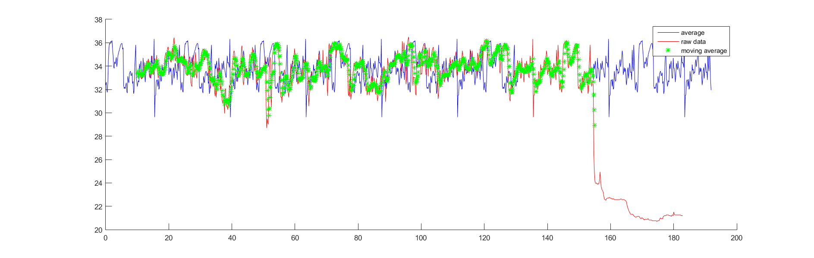
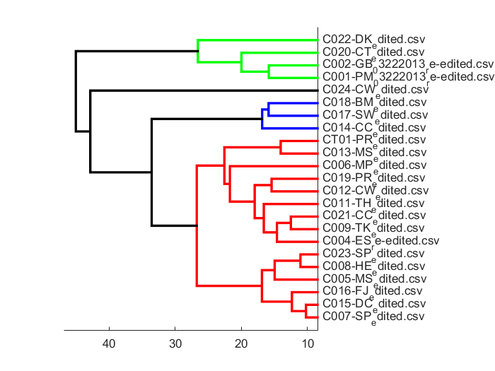
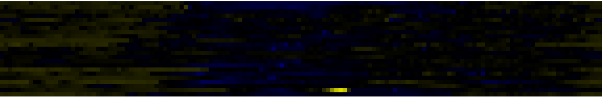

| Personalized circadian monitoring program using Jonckheere-Terpstra-Kendall (JTK) algorithm |
| Project Description |
|
This is a project for research purperse. By monitoring human’s temperature, we can figure out correlation between the temperature trend and human’s health. The researchers collect temperature data using a wearable sensor. I’m the programmer in this project, and develop a GUI program implementing the Jonckheere-Terpstra-Kendall (JTK) algorithm to analyze raw temperature data and figure out the amplitude and period of the temperature trend automatically. |
| Trend analysis |
|  |
| Dendrogram figure |
|  |
| Heatmap figure |
|  |